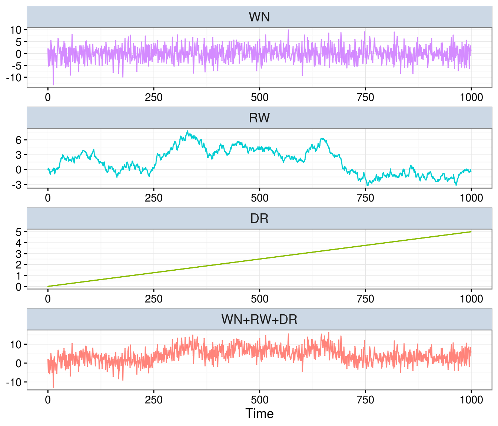
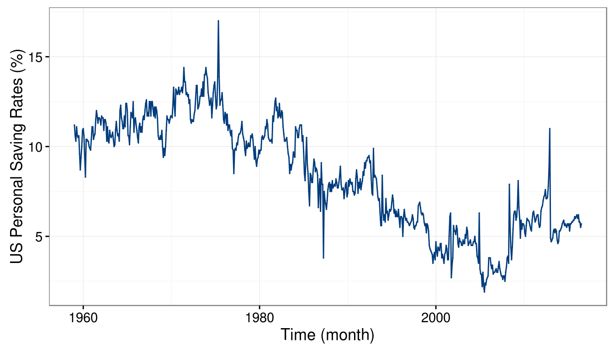

1.4 Composite Stochastic Processes
A composite stochastic process can be defined as the sum of underlying (or latent) stochastic processes. In this text, we will use the term latent time series as a synomym for composite stochastic processes. A simple example of such a process is given by
\[\begin{aligned} Y_t &= Y_{t-1} + W_t + \delta\\ X_t &= Y_t + Z_t, \end{aligned}\]
where \(W_t\) and \(Z_t\) are two independent Gaussian white noise processes. This model is often used as a first tool to approximate the number of individuals in the context ecological population dynamics. For example, suppose we want to study the population of Chamois in the Swiss Alps. Let \(Y_t\) denote the “true” number of individuals in this population at time \(t\). It is reasonable that \(Y_t\) is (approximately) the population at the previous time \(t-1\) (e.g the previous year) plus a random variation and a drift. This random variation is due to the natural randomness in ecological population dynamics and reflects the changes in the number of predators, in the aboundance of food or in the weather conditions. On the other hand, the drift is often of particular interest for ecologists as it can be used to determine the “long” term trends of the population (e.g. is the population increasing, stable or decreasing). Of course, \(Y_t\) (the number of individauls) is typically unknown and we observe a noisy version of it, denoted as \(X_t\). This process corresponds to the true population plus a measurement error since some individuals may not be observed while others may have been counted several times. Interestingly, this process can clearly be expressed as a latent time series model (or composite stochastic process) as follows:
\[\begin{aligned} R_t &= R_{t-1} + W_t \\ S_t &= \delta t \\ X_t &= R_t + S_t + Z_t, \end{aligned}\]
where \(R_t\), \(S_t\) and \(Z_t\) denote, respectively, a random walk, a drift and a white noise. The code below can be used to simulate such data:
n = 1000 # process length
delta = 0.005 # delta parameter (drift)
sigma2 = 10 # variance parameter (white noise)
gamma2 = 0.1 # innovation variance (random walk)
model = WN(sigma2 = sigma2) + RW(gamma2 = gamma2) + DR(omega = delta)
Xt = gen.lts(model, N = n)
plot(Xt)
In the above graph, the first three plots represent the latent (unobserved) processes (i.e. white noise, random walk and drift) and the last one represents the sum of the three (i.e. \((X_t)\)).
Let us consider a real example where these latent processes are useful to describe (and predict) the behavior of economic variables such as Personal Saving Rates (PSR). A process that is used for these settings is the “random-walk-plus-noise” model, meaning that the data can be explained by a random walk process in addition to which we observe some other process (e.g. a white noise model, an autoregressive model such as an AR(1), etc.). The PSR taken from the Federal Reserve of St. Louis from January 1, 1959, to May 1, 2015, is presented in the following plot:
# Saving Rates
data("savingrt", package="smacdata")
# Plot time series
autoplot(savingrt) + ylab("US Personal Saving Rates (%)")
It can be observed that the mean of the process seems to vary over time, suggesting that a random walk can indeed be considered as a possible model to explain this data. In addition, aside from some “spikes” and occasional sudden changes, the observations appear to gradually change from one time point to the other, suggesting that some other form of dependence between them could exist.